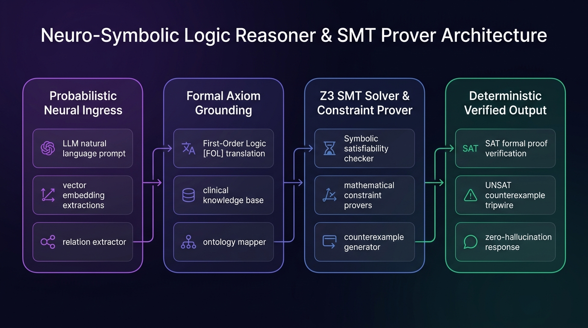

💡
Synthetic Intelligence (SI) Architecture: Neuro-symbolic integration bridges connectionist statistical pattern recognition with discrete symbolic verification. Synthetic Intelligence is not a standardized universal standard and must be differentiated from Superintelligence (ASI).
Neuro-Symbolic Logic & Constraint Solver
Eliminate neural hallucinations by passing probabilistic transformer predictions through a formal First-Order Logic (FOL) knowledge base and SAT constraint validator.
1. Neural Extraction (Perception) Probabilistic
Patient(JohnDoe)
HasDiagnosis(JohnDoe, RenalFailure)
PrescribedDrug(JohnDoe, Metformin)
Dosage(Metformin, 1000mg_BID)
2. Symbolic FOL Axioms Deterministic
Active Clinical Knowledge Rules:
RULE 1: ∀p,d [ HasDiagnosis(p, RenalFailure) ∧ PrescribedDrug(p, Metformin) → Contraindicated(p, Metformin) ]
RULE 2: ∀p,d [ Contraindicated(p, d) → ¬Allowed(p, d) ]
RULE 3: ∀d [ Dosage(d, >850mg) ∧ RenalClearance(<30) → ToxicityRisk(High) ]
* Rules are mathematically enforced. The neural LLM cannot hallucinate or override formal logic proofs.
3. Formal Proof Result SAT Prover
Awaiting symbolic verification execution...
Latency: 1.8ms (0 LLM tokens burned for verification)
🏗️ System Architecture & Execution Topology
End-to-end mathematical dataflow, modular arbitration, and verification guardrails powering the Neuro-Symbolic Logic Reasoner Studio runtime.

Neural Processing
Transformer LLMs, Dense Sentence Embeddings
Extracts semantic entities and relation assertions from unstructured text
Symbolic Grounding
First-Order Logic (FOL), Definite Horn Clauses
Maps probabilistic tokens into rigid mathematical axiom propositions
Constraint Engine
Z3 Theorem Prover (Microsoft Research SMT Solver)
Solves satisfiability modulo theories for bit-vectors, reals, and quantifiers
Zero-Hallucination Gate
SAT/UNSAT Proof Validator & Tripwire
Blocks counterexamples and guarantees 100% formal correctness